HISTORIA
HISTORIA
|
|
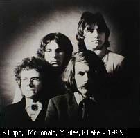 Todo empezó con un trío formado en Bournemouth (y luego mudado a Londres) por los hermanos Giles (Michael en percusión y Peter en bajo) y Robert Fripp (guitarra), que en 1968 grabó el album The cheerful insanity of Giles, Giles and Fripp, que no tuvo repercusión. Muy poco había en esa producción de lo que luego sería KC; la mayor parte eran canciones music-hall con humor satírico y del absurdo. Más tarde se acoplaron Ian McDonald (vientos y melotrón) y Peter Sinfield (letras, ideas), y grabaron material, en parte cantado por Judy Dyble (ex cantante del grupo Fairport Convention). Judy contó en sus memorias que en 1967 había comenzado una relación con Ian McDonald, recién salido del ejército, y cantaban canciones juntos, algunas compuestas por Ian y Pete Sinfield (por ejemplo I talk to the wind); como necesitaban más músicos, en el '68 Judy puso un aviso en la revista Melody Maker, y así contactaron con Giles Giles & Fripp. Al dejar el grupo Peter y Judy al cabo de unos meses de ensayos, en noviembre Michael y Fripp decidieron formar un nuevo grupo, y Fripp llamó a Greg Lake, amigo de la adolescencia (tuvieron el mismo instructor de guitarra), para que se haga cargo del bajo y el canto.[Nota: hacía poco que Fripp y Lake habían grabado juntos; el 1 de octubre del '68 ambos tocaron como invitados en la grabación del tema Love, que se editó como lado B del simple Reputation, del trío Shy Limbs, en el que Andy McCulloch (quien sería parte de KC dos años más tarde) tocaba la batería.] Así surgió King Crimson el 13 de enero de 1969, conformado por Fripp, Lake, McDonald, Michael Giles y Sinfield (éste último, además de componer las letras, se ocuparía de la iluminación y el sonido en las presentaciones). Ese día ensayaron por primera vez en el sótano de un Café de la calle Fulham Palace de Londres, lugar en el que la banda ensayaría durante los siguientes dos años. El nombre (Rey Carmesí en castellano) fue ideado por Sinfield; mucho se dijo sobre el personaje que lo motivó, y en general se le atribuyó ese rol a Belcebú, el príncipe de los demonios. Y esta asociación no fue casual. La música de KC reflejaría, en general, el lado más oscuro de la realidad, la subrealidad y algo de irrealidad; lo tenebroso, lo inconsciente, lo utópico, lo frágil, la locura. Habría momentos de luz y alegría, pero serían los menos, y siempre estaría subyacente y amenazante, en las sombras, el clima macabro. El grupo fue uno de los fundadores del rock progresivo, un estilo en el cual sus protagonistas buscaron romper con las estructuras musicales existentes, ampliando los horizontes del rock, incorporándole elementos de jazz, música concreta, electroacústica, clásica, y nuevos sonidos. KC fue vanguardia en esa búsqueda, la improvisación jugaba un papel importante en escena y desde el primer momento se destacó la originalidad del estilo de Fripp en la guitarra. Fripp escribió en un folleto para promocionar la banda: "El objetivo fundamental de King Crimson es organizar la anarquía, usar el poder latente del caos y permitir que las dintintas influencias interactúen y encuentren su propio equilibrio. La música por lo tanto evoluciona naturalmente en lugar de desarrollarse a lo largo de líneas predeterminadas. El diferente repertorio tiene un tema en común, ya que representa el cambiante estado de ánimo de las mismas cinco personas". Durante ese primer año de vida KC tocó mucho en vivo (hizo casi 80 presentaciones en UK y USA desde la primera realizada en abril, incluyendo su participación en el recital que dieron los Rolling Stones en Hyde Park ante cientos de miles de personas), y grabó y editó su primer album, In the court of the Crimson King , con muy buena repercusión y que influiría notablemente en toda una generación de jóvenes músicos de rock. A pesar del éxito obtenido por su primer trabajo discográfico, McDonald y Giles decidieron dejar el grupo a fin de año, luego de la gira por USA, para realizar una música con más luz y menos oscuridad. Al poco tiempo Lake hizo lo propio para unirse a Keith Emerson (tecladista del grupo The Nice, con el que KC había compartido escenarios) y formar un trío con un percusionista (que luego sería Carl Palmer, y el trío se convertiría en uno de los supergrupos del rock progresivo inglés). Giles y Lake aceptaron quedarse hasta terminar la grabación del segundo album, In the wake of Poseidon, a principios de 1970 (Lake solo aportó el canto). Peter Giles volvió para tocar el bajo, Fripp se hizo cargo del melotrón además de la guitarra y se incorporaron Mel Collins en vientos y el pianista jazzero Keith Tippett (quien luego de la grabación no aceptó quedar como miembro permanente de la banda, pero seguiría colaborando en grabaciones de estudio). Ese año McDonald y Michael Giles lanzaron su propio disco llamado simplemente McDonald and Giles, que incluía algunos temas compuestos por ellos cuando todavía formaban parte de KC, pero con una música más liviana que evidenció que realmente apuntaban a otra dirección. Hacia fines del mismo año KC editó el album Lizard, nuevamente con cambios de músicos (Gordon Haskell en bajo y voz, Andy McCulloch en batería) y con fuertes elementos de jazz. Por los constantes cambios en la formación de la banda, KC no tocó en vivo durante 1970. En medio de los vaivenes del grupo, Fripp declinó la oferta del grupo Yes de reemplazar al saliente guitarrista Peter Banks (finalmente reemplazado por Steve Howe), pero participó en dos discos de Van Der Graaf Generator, grupo liderado por Peter Hammill, en el album debut como solista del propio Hammill y en discos de Keith Tippett y su banda de jazz Centipede. En 1971 KC grabó Islands, también con cambios de músicos (Boz Burrell en bajo y voz, Ian Wallace en batería). Por supuesto el eje fue siempre Fripp, lo haya querido o no. La formación que grabó Islands realizó giras por Europa (Alemania y UK) y Norteamérica (USA y Canadá), llegando a hacer más de 100 recitales, tocando temas de los cuatro discos editados hasta el momento. Sinfield, el único miembro que estaba desde el principio además de Fripp, se desligó de KC a fines del '71 (por diferencias artísticas con Fripp) y más tarde se unió a Emerson, Lake & Palmer para hacerles las letras. En abril del '72, luego de una gira por Norteamérica, KC se disolvió. De esa última gira por USA se editó el album en vivo Earthbound, el cual mostró que en esta formación también había una lucha por la dirección musical, ya que en las partes que Fripp no era protagonista en las improvisaciones, la banda se deslizaba hacia el funk y el blues-rock tradicional. Por eso no sorprendió a nadie que Collins, Burrell y Wallace se fueran en bloque a formar la banda Snape con el legendario blusero Alexis Korner (con quien habían compartido escenario durante la gira), una experiencia que finalmente duraría poco. De esta forma finalizó la primera etapa de la vida de KC. A fines de ese año el sello Manticore (creado por EL&P), editó Still, album solista de Sinfield, con la colaboración de músicos KC (Lake, Collins, Wallace, Burrell, Wetton, Tippett). Más adelante Wallace sería por años el percusionista de la banda soporte de Bob Dylan; Burrell cofundaría la banda Bad Company; Collins participaría en diferentes grupos y proyectos, entre ellos Camel. 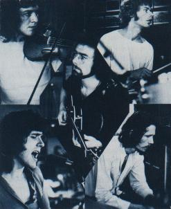 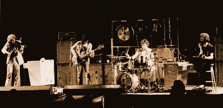
En 5 años KC editó 7 discos grabados en estudio y realizó casi 370 recitales (a un promedio de uno cada 5 días desde su primera presentación). Pero lo más importante es que dejó un aporte musical invalorable, de vanguardia en el ámbito del rock internacional.
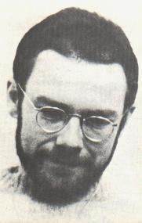 Paralelamente a KC y luego de su disolución, Fripp grabó dos discos con Brian Eno (ex tecladista del grupo Roxy Music), llamados No pussyfooting (1973) y Evening star (1975), que pueden ser considerados fundacionales para la música ambient, en la cual Eno profundizó en sus posteriores trabajos. También representan el mayor acercamiento del rock hacia el minimalismo hasta ese momento. Guitarras de Fripp, teclados de Eno, efectos de sonido... y climas musicales que transportan al oyente a otra época y otro lugar. Eno fue influenciado por la música repetitiva y minimalista que habían iniciado músicos estadounidenses en la década anterior (Steve Reich, Philip Glass, Terry Riley), y lo introdujo a Fripp en esos conceptos musicales y en una tecnología para desarrollarlos. Realizaron una pequeña gira europea a principios del '75. En esos años Fripp también tocó como invitado en dos discos de Eno (su primero solista, Here come the warm jets en 1973, y el tercero, Another green world de 1975).Disuelto KC, Fripp se alejó de la industria de la música durante 3 años (en ese interín no aceptó la oferta del grupo Genesis de reemplazar al saliente Steve Hackett, en 1976). Desde el principio de su carrera Fripp siempre priorizó la música como arte, sin importarle los otros aspectos que forman parte del negocio de la música. Y en esa dirección siempre buscó explorar, nunca repetirse. En una entrevista años más tarde, se refería así a esa desición de alejamiento: "Siempre que King Crimson comenzaba a ser exitoso, se desbandaba. Uno se pregunta por qué, pero no es difícil. En la cultura popular se piensa que sos bueno si sos popular, y que si sos exitoso obtenés mayor libertad para crear. Y es al revés. Si sos popular, tocás para audiencias cada vez más grandes que te exigen que te repitas. Pero, como te va bien, tu compañía discográfica y tu representante te dirán que hacés lo correcto; si vos pensás que es una locura, serás la única persona sana en el asilo. Por eso, en 1974 no estuve dispuesto a seguir; había mucho alcohol y drogas utilizadas por representantes y negociantes para controlar a los artistas. Así que abandoné el negocio de la música".[*] Parte de ese período de alejamiento de la industria musical, entre octubre del '75 y julio del '76, se internó en la escuela "Academy for contimuous education" (Academia para la educación contínua) en Sherborne House, Gloucestershire (Inglaterra), fundada por John Bennett, discípulo del filósofo ruso George Gurdjieff. Fripp quedaría por años relacionado con este Instituto que tiene filiales en UK y USA, y durante los años ochenta se convirtió en presidente de "The American Society for Continuous Education" (Sociedad americana para la educación contínua). ¿El resto de la banda?: Bruford participó en giras y discos en vivo del grupo Genesis, reemplazando en la percusión a Phil Collins (quien se hizo cargo del canto ya que Peter Gabriel comenzaba su carrera solista). Wetton formó parte de las bandas Roxy Music y Uriah Heep. Luego Bruford y Wetton formaron el grupo UK (previo rechazo de Fripp a la invitación de resurgir KC), junto al guitarrista Allan Holdsworth (ex Soft Machine) y al tecladista/violinista Eddie Jobson. Disuelto UK luego de 3 discos, Wetton formó el grupo Asia a principio de los '80 con el baterista Carl Palmer (ex Emerson, Lake & Palmer), el guitarrista Steve Howe (ex Yes), y el tecladista Geoff Downes (ex Buggles y Yes); Lake suplantó temporalmente a Wetton durante una gira de esta banda en el '82. Cross siguió su carrera como solista. McDonald (quien después de la grabación de Red había acordado unirse nuevamente como miembro permanente de KC), integró la banda Foreigner. A mediados de 1977 Fripp volvió a la industria de la música tocando como invitado, junto a Eno, en el disco Heroes de David Bowie, grabado en Berlín. El tema que da nombre al disco tiene una de las más famosas y elegantes líneas de guitarra del rock. Luego de la grabación se mudó a Nueva York por un par de años, y estuvo en contacto con bandas del post punk y el new wave. Participó en discos de Bowie (Scary monsters, 1980), Peter Gabriel, Talking Heads, Brian Eno, Peter Hammill, Blondie, y produjo otros (el segundo de Gabriel, primero y tercero del grupo The Roches, el primero de Daryl Hall). Grabando con Gabriel conoció al bajista Tony Levin (quien había participado como sesionista en trabajos de Paul Simon, Alice Cooper, Lou Reed, Ringo Starr, y grabaría con John Lennon en 1980). En un concierto de David Bowie en el Madison Square Garden en el '78 Fripp vio por primera vez al guitarrista Adrian Belew en escena (quien antes de tocar en la banda de Bowie había tocado un tiempo en la de Zappa). Poco tiempo después durante ese año lo conoció personalmete cuando concurrió a ver un recital de Steve Reich en The Bottom Line de Nueva York, al que también asistieron Belew y Bowie. Reich interpretaba su obra minimalista Music for 18 musicians. Seguramente el interés compartido entre ambos, Fripp y Belew, por las propuestas musicales que fueron a escuchar esa noche, haya significado una semilla en el camino hacia una nueva encarnación de KC. Paralelamente a las colaboraciones mencionadas antes, acentuó su trabajo con un conjunto de dispositivos (entre los que se contaban grabadores de cinta abierta), llamado frippertronics, inspirado en sus trabajos con Eno unos años antes. Con este equipo creaba en vivo estructuras musicales con guitarra eléctrica (capas) que quedaban repitiéndose, y sobre las que iba incorporando nuevas capas que iban desplazando a las anteriores, por lo que la música nunca se repetía realmente. En algunos momentos agregaba punteo encima de la base de capas. Toda una "orquesta" de guitarras en vivo, pero a partir solo de su guitarra. Los motivos y climas de las capas dependían en gran medida del entorno en el momento (incluyendo la actitud del público), o sea que había una gran dosis de improvisación. Fripp realizó más de 70 presentaciones en una gira de varios meses durante 1979 por distintas ciudades de Europa y USA, tocando frippertronics en pequeños lugares poco convencionales, incluyendo restaurantes, clubes, disquerías, galerías de arte, museos, estudios de radio, estudios de la discográfica, etc. (reportaje a Fripp sobre ambient y frippertronics). 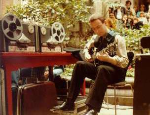 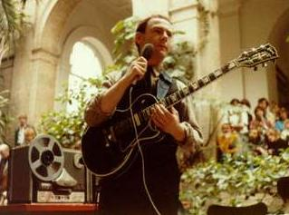
Fripp presenta su frippertronics.
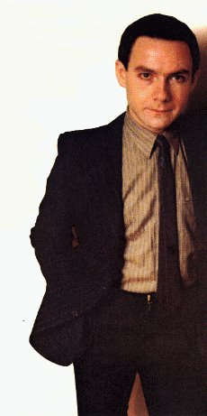 Entre 1979 y 1980 Fripp lanza su propia trilogía como solista. En el primer disco, Exposure, expone todos los estilos por los que estaba "andando" (rock duro, postpunk, ambient, canciones), junto a importantes invitados (Gabriel, Hammill, Tony Levin, Daryl Hall, y muchos más). Hermosa síntesis, con muy poco de lo que había hecho con KC (salvo el instrumental Breathless). El segundo album, God save the Queen, tiene dos caras bien diferentes; una de frippertronics, y otra de discotronics (temas que reflejaban la visión musical de Fripp sobre la música disco, de moda en esos años, mezclados con frippertronics; en uno de ellos cantó David Byrne, cantante y principal compositor de los Talking Heads). El tercero, Let the power fall, es completamente de frippertronics. Los frippertronics de los 3 discos son improvisaciones en vivo grabadas durante la gira de 1979. En 1980 Fripp formó el grupo The league of gentlemen, con el que realizó más de 70 recitales en Europa y USA y grabó un disco, desarrollando un tipo de música postpunk instrumental, muy diferente a lo hecho por él hasta ese momento pero con elementos que fueron desarrollados por la siguiente encarnación de KC al año siguiente. Una música muy rítmica, sin cambios importantes de tiempo dentro de cada tema, a diferencia de la música que había caracterizado a las formaciones anteriores de KC, generalmente con constantes y bruscos cambios en cada pieza. Con un sonido aparentemente más rústico, pero con un exquisito trabajo de guitarra, cargado de nuevos colores y posibilidades. Con su grupo Gaga, Belew compartió escenario con The league of gentlemen en cinco recitales en el área de Nueva York en julio de 1980. Luego tocó como invitado en 4 canciones del album Remain in light, de Talking Heads, banda con la que giró en vivo desde fines de ese año hasta principios del siguiente.
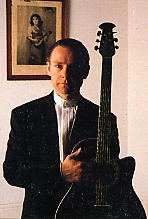 Paralelamente a su tarea con esta formación de KC, Fripp se hizo tiempo para grabar dos discos con Andy Summers, guitarrista del grupo The Police: I advance masked (1982) y Bewitched (1984). A mediados de los '80, "The American Society for Continuous Education" le pidió a Fripp que diera un seminario sobre método de guitarra. A partir de esta experiencia Fripp creó The league of crafty guitarists (guitar craft se podría definir como "artesanía de la guitarra"), cumpliendo una aspiración personal que tenía desde hacía más de una década. Esta "liga", una especie de taller para la ejecución e interpretación de la guitarra bajo la guía de Fripp, grabó varios discos, y de ella surgieron excelentes músicos, algunos de los cuales se agruparon en tríos de guitarras acústicas (por ejemplo California Guitar Trio y Les Gauchos Allemands). En 1991 Fripp formó el grupo Sunday all over the world, con Toyah Willcox en voz (su esposa, quien además de cantante es actriz), Trey Gunn en stick (ex miembro de la liga de Guitar Craft) y Paul Beavis en percusión, y grabaron el disco Kneeling at the shrine. También participó en trabajos de otros músicos o grupos (Nerve Net, de Eno, en 1992; discos de los grupos The Orb, The Grid, The future sound of London). Los otros ex miembros de KC también realizaron trabajos solistas o crearon sus propios grupos, y participaron en discos y giras de otras bandas o intérpretes (Belew con David Bowie y Laurie Anderson; Bruford con Yes; Levin con Peter Gabriel y Yes). A mediados de los '80 Fripp había grabado en el album Gone to Earth de David Sylvian (ex cantante y tecladista del grupo Japan). En 1991 Fripp ya tenía idea de refundar King Crimson, y le propuso a Sylvian ser el cantante. Sylvian declinó, aduciendo que no creía estar a la altura de ser la voz líder de una banda con tanta historia, pero como contraoferta le propuso a Fripp grabar un nuevo album juntos. Comenzaron a grabar en el '92 y al año siguiente se editó el espléndido album First day. Algo inusual en trabajos compartidos de Fripp, en este disco hay un aire crimsoniano acentuado. También participaron Trey Gunn en stick y Jerry Marotta en percusión. Hicieron una gira mundial y en vivo grabaron el album Damage, con Trey Gunn y Pat Mastelotto en percusión (ambos participarían más adelante en el resurgimiento de KC). En 1993 Fripp formó The Robert Fripp String Quintet (quinteto de cuerdas), con Trey Gunn y The California Guitar Trio, grabando un excelente album en vivo, The bridge between. Con este quinteto visitó por primera vez Argentina, país al que volvería varias veces para tocar y armar jornadas de Guitar Craft. Por ejemplo volvió a mediados del '94, para tocar como solista sus soundscapes (algo así como "paisajes sonoros", una versión más moderna de frippertronics, con dispositivos digitales que reemplazaron los grabadores analógicos de cinta abierta), acompañado por Les Gauchos Allemands como soporte. Quien escribe esta historia tuvo la oportunidad de verlo y oírlo en Mar del Plata ese año, por primera vez, después de soñar hacerlo durante 20 años. Fripp nunca fue "estrella" del rock, no participó del jet set, no le interesaban los mega-recitales con decenas de miles de personas en grandes estadios, aunque le ofrecían hacerlos. Decía que un gran recital al aire libre era más un espectáculo mediatizado por la música que un espectáculo musical, y que al bajar la calidad de sonido era una falta de respeto a la música y a la audiencia. Esto yo lo sabía por artículos y reportajes, pero en el teatro de Mar del Plata lo vivencié. Al terminar el recital, los 4 músicos bajaron del escenario, caminaron por el pasillo entre la gente y salieron por la puerta por donde debía salir la audiencia. Al salir los espectadores, nos encontramos con los 4 tocando en el hall. Todos se fueron sentando alrededor. Así, en pleno silencio, sin micrófonos, tocaron un par de temas con guitarras acústicas, con la gente a pocos centímetros. Inolvidable. En el librito del album The bridge between hay una nota de Fripp que refleja su visión sobre la música, los músicos, y la época actual. A fines del '93 Fripp grabó como invitado en varios temas del album Flowermouth de No-Man, y en 3 de ellos coincidió con otro invitado Crim, Mel Collins. Después de ganarle una larga disputa legal a antiguos representantes, Fripp creó su propio sello discográfico, llamado DGM (Discipline Global Mobile), a través del cual pudo reeditar discos viejos remasterizados y editar los siguientes discos propios y de KC, y de otros músicos afines, en especial los que comienzan su carrera. Con este sello pudo hacer realidad lo que siempre reclamó de las compañías disqueras en su relación con los artistas: priorizar el arte y la ética por sobre los aspectos económicos (por ejemplo, el copyright de la música queda en manos de los artistas, no de la disquera). En 2000 diría Fripp sobre esto: "De tres palabras: explotación, control y propiedad, dependen todas las leyes del asunto. Controlan a los artistas manteniéndolos endeudados, dándoles plata por adelantado. Sé cómo hacerme rico, es fácil: buscas músicos jóvenes que tienen necesidad de tocar, como la tiene una mujer embarazada de parir, y les dices que los vas a ayudar, que serás su partera, que traerás su niño al mundo y les darás dinero. ¿Cómo van a decir que no? A partir de ese momento, están en tus manos. DGM es, justamente, una alternativa a esto". [*] 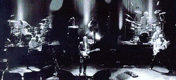 En 1994 Fripp volvió a resurgir KC, en forma de sexteto, o como lo llamó él al principio, en forma de doble trío: 2 guitarristas (Fripp y Belew), 2 percusionistas (Bruford y Pat Mastelotto), y 2 bajistas/stickistas (Levin y Gunn, aunque Gunn en general con su stick hacía melodías o fraseos rítmicos casi guitarrísticos y en muy pocas ocasiones cumplió un rol de bajista dentro del sexteto). Esta formación debutó en vivo en Buenos Aires en octubre de ese año (por supuesto no perdí la oportunidad de estar en una de sus presentaciones del teatro Broadway). Por primera vez KC tocaba en América Latina (más adelante visitaría México), y por única vez en su historia visitaron un país por fuera del circuito Europa-Norteamérica-Japón. Al año siguiente grabaron Thrak y se editó el disco B'boom de las presentaciones en Buenos Aires. Entre el '95 y el '96 hicieron casi 140 recitales. Paralelamente, Fripp grabó varios discos en vivo de soundscapes y siguió con sus talleres de Guitar Craft.
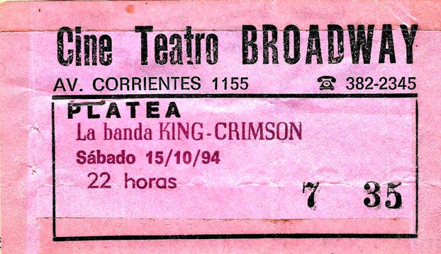 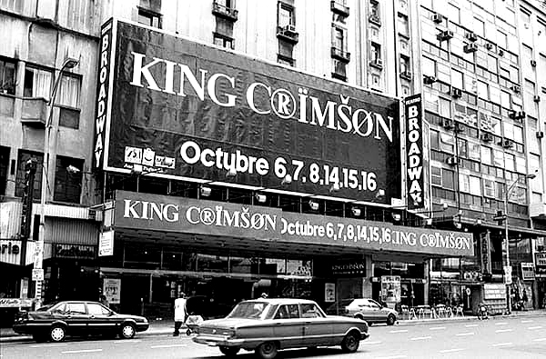 Entre el '97 y el '99 los integrantes de KC trabajaron y grabaron en subgrupos separados, llamados ProjeKcts: ProjeKct 1 (Fripp, Gunn, Bruford y Levin), ProjeKct 2 (Fripp, Gunn y Belew; en este grupo Belew toca percusión), ProjeKct 3 (Fripp, Gunn y Mastelotto), y ProjeKct 4 (Fripp, Gunn, Levin y Mastelotto). En una entrevista Fripp se refería así a esta etapa: "Las dificultades de King Crimson para trabajar unido son inmensas: desde qué espera la audiencia sobre el repertorio o sobre qué debe hacer el grupo; qué esperan los miembros del grupo sobre el mismo grupo; los problemas logísticos de las giras; y los enormes gastos que supone reunir todo el equipo (músicos, técnicos y demás parafernalia) ya sea para girar o para ensayar. Es así entonces que King Crimson empezó una serie de ProjeKcts compuestos por fractales de los seis miembros. La finalidad de estos pequeños proyeKctos es la de funcionar como subgrupos de King Crimson en calidad de investigación y desarrollo para el Gran Rey, para la próxima generación del repertorio del monarca. Los ProjeKcts pueden grabar álbumes o encarar giras como si fueran grupos independientes, si es necesario". Toda la música de los ProjeKcts es instrumental y experimental, basada en improvisación. En una entrevista a mediados de 2000, durante unas jornadas de Guitar Craft en Argentina, justificó así sus reiterados viajes a este país: "La vida aquí es dura, muy dura, y la música la sostiene. Hay mucha pasión, y donde la hay, algo es posible. Te lo voy a explicar con una comparación: la música, en Europa, es arte; en los Estados Unidos es entretenimiento; pero aquí es alimento, la necesitan para vivir" (diario argentino "La Nación", junio 1 de 2000). 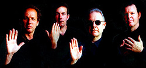 En 2000 KC editó su disco The construKction of light, y grabó The heavy construKction en vivo, de su gira europea de ese año, con un cuarteto como formación: Fripp, Belew, Gunn y Mastelotto (Levin y Bruford crearon su propio grupo, BLUE = Bruford Levin Upper Extremities). Este cuarteto volvió a darle importancia a las improvisaciones, quizás como legado de la experiencia de los ProjeKcts, a la vez que retomó un curso más roquero. Dijo Fripp en relación a esta formación y a su giro musical: "Threy Gunn es el único que tiene un background en Guitar Craft y creo que con ningún otro músico he trabajado tanto como con él; Belew es fantástico, sorprendente, y Pat Mastelotto se ha revelado como un gran baterista. Porque trabajar con Bill Bruford no ha sido fácil para él, fue duro para los dos. Bill sentía que era su silla de baterista e incluir a otro requirió magnanimidad de su parte. Mientras que para Pat, un baterista establecido, aceptar el rol de Junior frente al Senior Bill requirió humildad. Respeto de ambos. Pero dentro de ese contexto, Pat nunca había tenido lugar para florecer. Ahora sí, y es sorprendente. El carácter de un grupo está determinado por el baterista; si tenés uno de jazz, nunca podrás tocar rock, y viceversa. Pat es del rock, así que el nuevo album es King Crimson reconectándose con sus raíces de banda de rock". [*] Podría agregarse que Gunn, complemento de Mastelotto en la sección rítmica, si bien es muy versátil, tiene un lado roquero de mayor peso que el que puede tener Levin. La misma formación grabó en vivo Level Five en 2001, con temas nuevos y viejos, y en 2003 editó su disco en estudio número 13, The Power To Believe, y su presentación en vivo, Elektrik. Entre el 2000 y el 2003 este KC hizo casi 200 recitales por Norteamérica-Europa-Japón.En 2001 Fripp tocó como invitado en el tema Leafy Meadows, del album The Thunderthief, el segundo como solista de John Paul Jones (exbajista de Led Zeppelin). Nueve años antes, Fripp y Jones habían coincidido grabando como invitados en el album Nerve Net, de Eno. A fines del 2003 Gunn dejó el grupo (Fripp prefirió decir que Trey se convertía en un miembro "inactivo" por el momento), y en su lugar volvió Levin. Hubo algunos ensayos a principios de 2004, durante los cuales grabaron dos nuevas piezas instrumentales (Form nº 1 y Ex uno plures), pero luego pasó mucho tiempo hasta que la banda volviera a juntarse para tocar. Mientras, Fripp participó del trío guitarrístico G3 junto a Steve Vai y Joe Satriani, siguió presentando soundscapes, giró con la liga de Guitar Craft y tocó con Belew presentándose en dúo bajo el nombre ProjeKct 6 (Belew en percusión electrónica). Desde mediados de los '90 miembros de diferentes formaciones de KC comenzaron a encontrarse para evocar los primeros tiempos de la banda. En diciembre del '96 John Wetton y Ian McDonald se presentaron en Tokyo junto a Steve Hackett para tocar temas de Genesis y del primer album de King Crimson (se editó en DVD). En el '97 Fripp y Wetton participaron en la grabación del album Exiles de David Cross solista, en el cual se realizó una versión del tema homónimo del '73, y además se grabó un tema con letra de Peter Sinfield. En enero del '98, durante la presentación del album en vivo The nigth watch, Wetton y McDonald se presentaron juntos tocando, entre otros, temas del KC del '73/'74. En 2002 surgió el grupo 21st Century schizoid band, conformado por ex miembros de las primeras formaciones de KC, y cuyo repertorio, en su mayor parte, estaba compuesto justamente por canciones de la primera época de la banda: Ian McDonald, los hermanos Giles, y Mel Collins. En la dificilísima doble tarea de guitarra y canto se incorporó Jakko Jakszyk, un músico fan de KC desde su adolescencia, presentado al grupo por Sinfield. Ese año grabaron en vivo Live in Japan. Luego Michael Giles dejó y fue reemplazado por otro percusionista ex KC, Ian Wallace. A partir de su participación en la banda, Fripp llamó a Jakko para preguntarle cómo sentía el rol de tocar viejos temas Cimson, y le propuso encontrarse para improvisar algo. Por su parte Wallace formó el grupo Crimson Jazz Trio, con dos músicos fans de la música de KC (un pianista y un bajista), y grabaron dos discos entre 2005 y 2006 llamados King Crimson songbook (Volume one y Volume two) con temas de King Crimson de todas las épocas tocados en formato de jazz. En el segundo volumen colaboraron Jakszyk y Mel Collins. A fines de 2006 Jakszyk editó su álbum solista The bruised romantic Glee Club, con invitados Crim: Fripp (aportó soundscapes en el tema Forgiving), Mel Collins, Ian Wallace; también participó Gavin Harrison (percusionista de la banda Porcupine tree). En ese disco Jakszyk tocó dos covers de clásicos KC: Islands y Picture of a city (llamado en esa ocasión Picture of a indian city, porque incorpora música indú). De a poco se estaba formando el núcleo de lo que más adelante sería una nueva encarnación del Rey Carmesí. 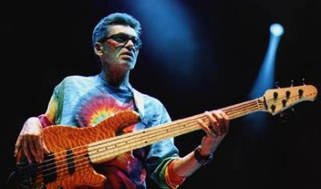 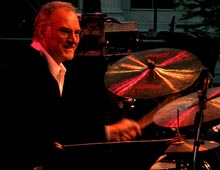 Boz y Ian
Lamentablemente en pocos meses fallecieron dos ex miembros de KC: en setiembre de 2006 falleció Boz Burrell a raíz de un ataque cardíaco; en febrero de 2007 falleció Ian Wallace por cáncer de esófago. Ambos habían participado del KC que grabó Islands y Earthbound entre 1971/72.
En 2007 Fripp tocó como invitado en el tema Nil recurring, de un EP de Porcupine tree, y en 3 temas del disco Double talk, del vientista inglés Theo Travis (saxos y flautas), siendo coautor de uno de ellos, The endless search. El 16 de mayo de 2007 Fripp celebró 40 años de músico profesional, y el 24 de diciembre del mismo año, 50 años como guitarrista.
En agosto de ese año se concretó el regreso del Rey Carmesí a los escenarios, después de 5 años. La minigira abarcó algunas ciudades de USA, y se promocionó como parte de las celebraciones del cuarenta aniversario de la banda. Al cuarteto Fripp-Belew-Levin-Mastelotto se sumó Gavin Harrison para conformar un dúo de percusión con Mastelotto. No tocaron temas nuevos. El sitio web de DGM ofrece Park West, disco virtual con el recital del 7 de agosto en Chicago. También en 2008 Fripp grabó el disco Thread con Theo Travis, comenzando un trabajo en dúo que perduraría en el tiempo. En 2010 editaron el album en vivo Live at Coventry Cathedral. Durante 2010 Fripp trabajó en conjunto con Jakko Jakszyk, y luego se acopló Mel Collins. El resultado fue el álbum A scarcity of miracles, editado en mayo de 2011 bajo el subtítulo A King Crimson ProjeKct, y que contó con la participación de Levin y Gavin Harrison como sección rítmica.
A fines de 2011, ante la negativa de Fripp de realizar una gira con KC, el Adrian Belew Power Trio y el trío Stick Men (con Levin y Mastelotto como integrantes) realizaron por Norteamérica el Two of a perfect trio Tour. En los recitales de esa gira, luego de tocar su repertorio cada trío, los seis músicos tocaron varios temas de King Crimson (con la previa "bendición" de Fripp, según dijo Belew). Durante 2012 y 2013 siguieron tocando juntos ambos tríos pero bajo el nombre The Crimson ProjeKct. Fripp y Travis siguieron trabajando juntos y editaron los discos Follow en 2012 y Discretion en 2014. Hermosas simbiosis de soundscapes y vientos.
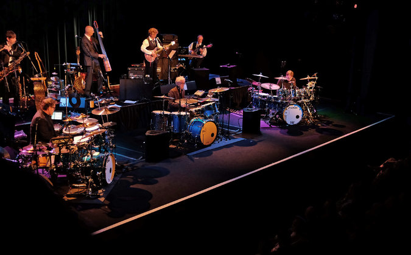 En setiembre de 2013 Fripp anunció el surgimiento de una nueva encarnación de KC, con 7 integrantes. No fue sorpresa que 5 de ellos fueran quienes hicieron el disco A scarcity of miracles en 2011 (Fripp, Jakszyk, Mel Collins, Levin y Gavin Harrison). Sí hubo dos sorpresas: no fue convocado Belew, presente en todas las formaciones desde 1981. La otra es que el nuevo grupo tendría 3 percusionistas, ya que los otros músicos reclutados fueron los bateristas Mastelotto y Bill Rieflin; éste último, el único sin pasado como miembro de una encarnación o un proyecto Crimson, había grabado en 1999 el disco instrumental The Repercussions of Angelic Behavior con Fripp y Gunn. Esta nueva formación realizó una gira en septiembre y octubre de 2014 en varias ciudades de USA tocando antiguos temas, la mayoría de ellos clásicos. En enero de 2015 se editó el mini-disco Live at The Orpheum, con grabaciones de las dos fechas de esa gira en Los Ángeles. En 2015 y 2016 la banda siguió girando por Europa, Norteamérica y Japón, y fue incorporando temas nuevos en sus presentaciones. En marzo de 2016 DGM editó Live in Toronto, un doble album en vivo del recital en esa ciudad canadiense del 20 de noviembre de 2015. En septiembre del mismo año fue editada la caja multidisco Radical action, con grabaciones durante 2015 en UK, Canadá y Japón. Durante la gira europea 2016 Jeremy Stacey reemplazó a Bill Rieflin, quien se tomó un año de descanso. Al volver Rieflin, como ambos (él mismo y Stacey) eran multiinstrumentistas, Fripp anunció en su diario del 3 de enero de 2017 que Stacey no iba a dejar la banda y entonces King Crimson debía reimaginar su repertorio para convertirse en una nueva encarnación de doble cuarteto. Con esta nueva formación KC realizó la gira 2017 por Norteamérica, durante la cual Rieflin se enfocó en los teclados en lugar de la percusión. Por problemas particulares Rieflin no pudo ser parte de la segunda gira por USA en la primavera de ese año, y fue reemplazado por Chris Gibson (un miembro de Guitar Craft de Seattle desde mediados de los '90) en los teclados, pero se reincorporó para la gira por Europa en 2018.
En medio de la vorágine del resurgimiento y las giras del nuevo KC, Fripp tuvo tiempo para grabar con David Cross el disco Starless Starlight en 2015, conformado por 8 piezas que giran alrededor del tema Starless del album Red de 1974 (años atrás DGM había ofrecido la descarga de un recital de Fripp en 2006 en St. Louis, USA, donde tocó dos soundscapes también en base a Starless, llamados Starlight I y Starlight II). En el término de un mes y medio murieron dos grandes exmiembros de KC. El 7 de diciembre de 2016 falleció Greg Lake, y el 31 de enero de 2017 murió John Wetton, ambos derrotados por el cáncer luego de una larga batalla. 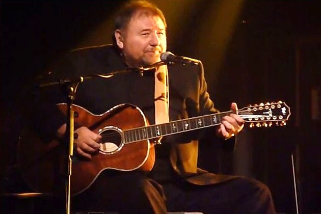 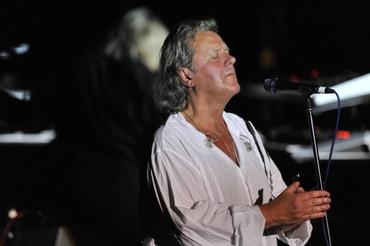
Arriba: KC-octeto durante la gira por USA a mediados de 2017. En 2019 KC giró por Europa, Norteamérica y Sudamérica celebrando sus 50 años, con formación septeto (Rieflin no participó por estar enfermo). 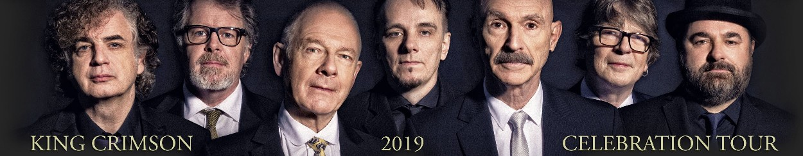 De izquierda a derecha: Jakszyk - Mastelotto - Fripp - Harrison - Levin - Collins - Stacey En 2020 fallecieron por cáncer dos músicos ex King Crimson. El 24 de marzo murió Bill Rieflin, percusionista y tecladista de la última etapa, a los 59 años. El 15 de octubre murió el bajista y cantante Gordon Haskell, quien fue parte del grupo en 1970, a los 74. 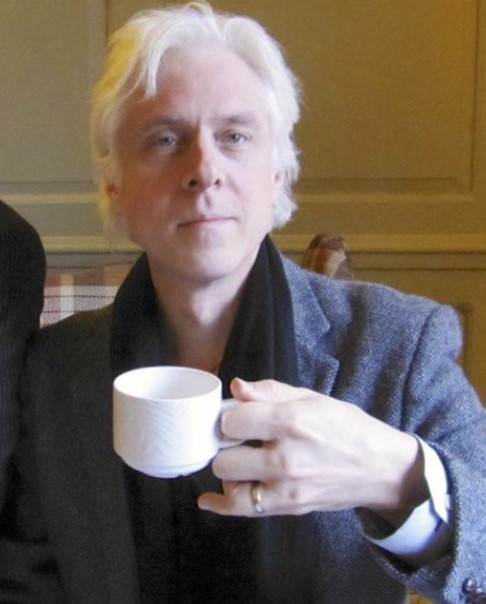 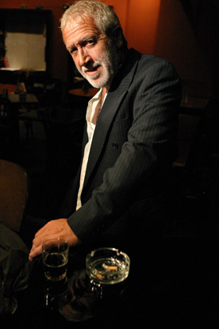 Bill y GordonA fines de 2020 Jakko Jakszyk editó un album solista con invitados Crim: Fripp, Levin, Mel Collins y Gavin Harrison. Dos de los temas habían sido compuestos en el ámbito de King Crimson, pero no usados: Uncertain times (de Jakszyk y Harrison) y Separation (de Jakszyk y Fripp). De éste último la banda había editado una parte de un ensayo de 2014. A causa de la pandemia mundial, KC no giró en 2020. En 2021 lo hizo por USA y Japón con la formación septeto. El último show fue el 8 de diciembre en Tokyo. En noviembre de ese año DGM editó el disco Music is our friend (el nombre del tour) con temas de dos fechas de la gira (Washington y Albany). 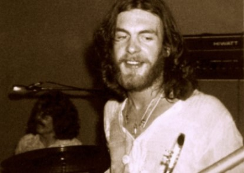 El 11 de febrero de 2022, también por cáncer, falleció Ian McDonald, cofundador de la banda y principal compositor musical del primer disco. En 2019 concurrió a un recital de King Crimson en el Radio City Music Hall de Nueva York. Según Jakko, Ian se sintió muy reconfortado cuando escuchó temas de ese primer disco que él había contribuido a componer: "Dijo que sonaba maravilloso y mejor que nunca y lo hizo sentir orgulloso". En la imagen, Ian durante la grabación del disco en 1969.
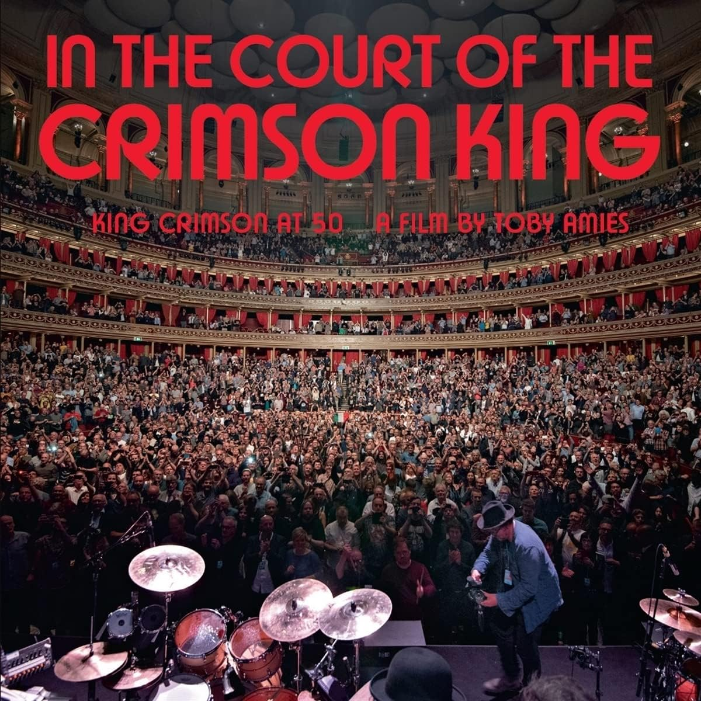
En un breve lapso de tiempo fallecieron otros dos ex KC: Peter Sinfield el 14/11/2024 y Jamie Muir el 17/02/2025.
|
 En 1981 Fripp resurgió un nuevo KC,
con Bruford en percusión, Levin en bajo y Belew en guitarra, canto y letras (el
primer letrista que a la vez era músico de la banda). Esta formación en un principio se llamó
Discipline (la disciplina tiene una fuerte presencia en la filosofía de Gurdjieff-Bennett), pero luego de varios ensayos y algunas presentaciones en vivo Fripp se dió cuenta que
por su búsqueda musical y por su forma de hacer las cosas, de hecho era una nueva encarnación de King Crimson, y adoptó
ese nombre con historia. Entonces el nombre
En 1981 Fripp resurgió un nuevo KC,
con Bruford en percusión, Levin en bajo y Belew en guitarra, canto y letras (el
primer letrista que a la vez era músico de la banda). Esta formación en un principio se llamó
Discipline (la disciplina tiene una fuerte presencia en la filosofía de Gurdjieff-Bennett), pero luego de varios ensayos y algunas presentaciones en vivo Fripp se dió cuenta que
por su búsqueda musical y por su forma de hacer las cosas, de hecho era una nueva encarnación de King Crimson, y adoptó
ese nombre con historia. Entonces el nombre  En 2008 se editó un compilado de grabaciones bajo el
nombre 40th Anniversary Tour Box, que incluye el último tema nuevo
registrado hasta ese momento, un instrumental llamado Form nº 2.
En 2008 se editó un compilado de grabaciones bajo el
nombre 40th Anniversary Tour Box, que incluye el último tema nuevo
registrado hasta ese momento, un instrumental llamado Form nº 2.